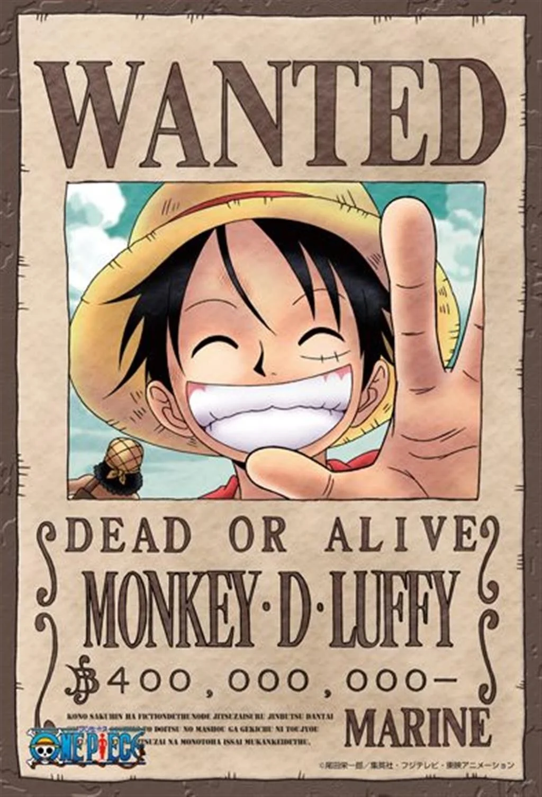
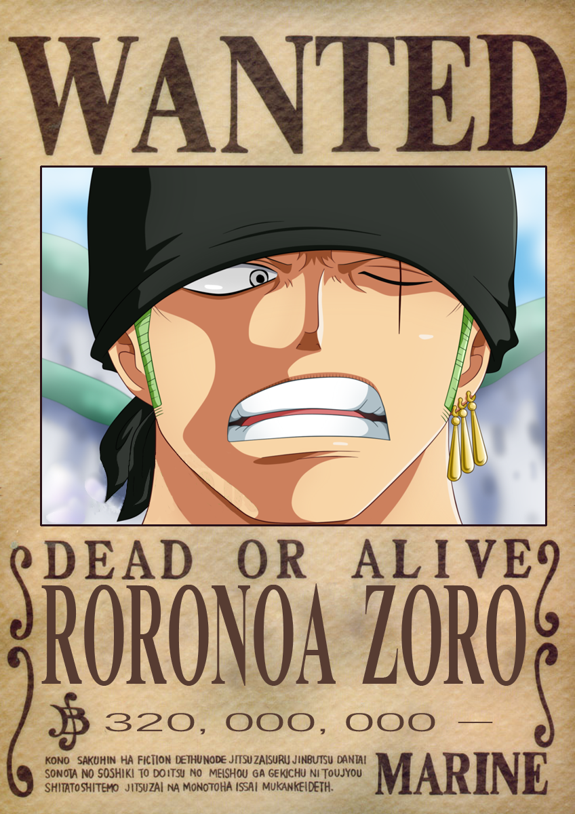
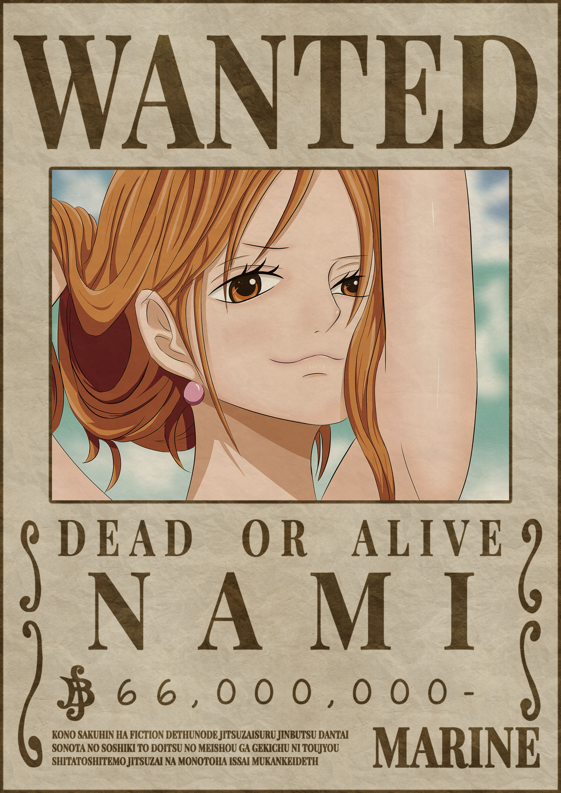

Monkey D. Luffy
Monkey D. Luffy (モンキー・D・ルフィ, Monkī Dī Rufi) is the captain of the Straw Hat Pirates and the main protagonist of the One Piece series.
At a young age, Luffy admired the pirates led by "Red Haired" Shanks. He accidentally ate the Paramecia-type Gum-Gum Fruit (ゴムゴムの実, Gomu Gomu no Mi), gaining rubbery attributes. After Shanks loses an arm while saving him, Luffy resolves to form his own pirate crew and become the Pirate King.
Garp, displeased with Shanks' influence on his grandson, leaves Luffy to be raised by Curly Dadan and her mountain bandits. During this time, he becomes close friends with Ace and Sabo.
Wearing Shanks' treasured straw hat, Luffy forms The Straw Hat Pirates and sets sail for the Grand Line. He quickly gains infamy as "Straw Hat" Luffy (麦わらのルフィ, Mugiwara no Rufi).
After two years of training on a secluded island, Luffy returns with advanced abilities and sets his sights on the New World.
Due to his infamy, he is one of the pirates known as "The Worst Generation." Luffy also possesses the advanced application of Haki and a unique devil fruit power, the Mythical Zoan-type, Human-Human Fruit, Model: Nika.
Roronoa Zoro
Monkey D. Luffy is the captain of the Straw Hat Pirates, the main protagonist of the One Piece series.
As a child, Luffy admired the pirates led by "Red Haired" Shanks. After eating the Paramecia-type Gum-Gum Fruit, he gained rubbery attributes. Luffy's dream is to become the Pirate King.
He was raised by Curly Dadan and her bandits after Shanks' departure. During this time, he became close friends with Ace and Sabo.
Wearing Shanks' straw hat, Luffy formed The Straw Hat Pirates and set sail for the Grand Line, gaining fame as "Straw Hat" Luffy.
After two years of training, Luffy returned with advanced abilities and ventured into the New World.
Known as a member of "The Worst Generation," Luffy possesses advanced Haki abilities and a unique devil fruit power, the Mythical Zoan-type, Human-Human Fruit, Model: Nika.
Nami
Nami (ナミ) was adopted and raised by Belle-Mère, a former navy seaman turned tangerine farmer. Her mother was tragically murdered by the infamous pirate Arlong, who occupied their island and extorted the population.
As a child, Nami struck a deal with Arlong and joined his pirates to eventually buy freedom for her village. Despite being a pirate-hating pirate, she developed exceptional skills in cartography, navigation, and weather forecasting.
After Arlong's defeat by the Straw Hat Pirates, Nami pursued her dream of creating a complete map of the world. She became known as "Cat Burglar" Nami (泥棒猫のナミ) and joined the Straw Hat Pirates.
Usopp

Usopp (ウソップ) was abandoned by his father, Yasopp, during his early childhood when Yasopp joined the Red-Haired Pirates. Usopp's mother, Bachina, fell ill, and he started telling tall tales, hoping that his father would return and take them out to sea. He often visited Kaya, a friend from the mansion atop the hill where he lived.
Even after his mother's death, Usopp didn't blame his father for leaving. Despite being cowardly, he aspired to become a great pirate.
Usopp is known for his distinctive long nose, a result of his tendency to exaggerate. He is a skilled inventor, painter, and sculptor. In combat, he uses slingshots with great precision and a unique fighting style known as "The Usopp Arsenal."
Under his alter-ego "Sogeking, the King of Snipers," he helps the Straw Hats on various adventures. He later becomes known as "God" Usopp after assisting in the liberation of Dressrosa from Donquixote Doflamingo's rule.